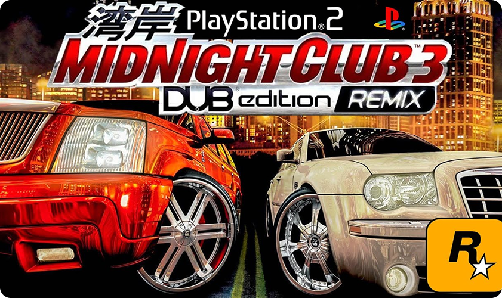

O QUE É A CULTURA AUTOMOTIVA
A cultura automotiva vai muito além dos carros e das suas modificações. Ela une pessoas que compartilham uma mesma paixão, fortalece laços e proporciona experiências que transformam máquinas em muito mais do que meios de transporte.
Presente nas ruas, nas pistas e nos encontros de entusiastas, essa cultura reúne história, engenharia, design e diferentes formas de expressão.
Cada carro carrega características próprias, seja por sua origem, seu desempenho, sua época ou pela identidade de quem o conduz.
Com uma diversidade que atravessa gerações e fronteiras, o universo automotivo abriga inúmeras vertentes e comunidades.
VARIEDADES AUTOMOTIVAS
O AUTOMOBILISMO E A SOCIEDADE
ENCONTROS
Dentro dessa grande comunidade diversos encontro são promovidos, esses encontro podem ser nichados com um tipo específico de automóveis ou pode ser aberto.
Por exemplo, na cidade de Francisco Morato - SP, no dia 09 de novembro de 2025. Foi realizado a 2ª Edição do Encontro de Carros Antigos, contando com modelos como Ford GT40, Shelby Cobra, Maverick GT entre outros.
Eventos como esse reunem famílias inteiras para aproveitarem do espaço e apreciarem carros e shows exclusivos.


KARTÓDROMOS
Outra programação que atrai a muitos são os Kartódromos.
Nesses locais por um valor você pode receber um treinamento especializado, alugar os equipamentos e Karts e correr com a família e amigos, ou até mesmo com outras pessoas que estão no local.
Essa é uma alternativa para aqueles que não só admiram carros, mas, que também desejam correr em um ambiente seguro e controlado, garantindo a emoção e a segurança de todos.
Essas mini corridas são uma ótima forma de se aventurar na velocidade mesmo sem um investimento alto
MUSEUS E EVENTOS
Há também diversos tipos de locais e eventos para expor os carros além dos encontro feitos por entusiastas.
Esses locais vão desde museus como o Dream Car São Roque, ou exposições como o do Salão de Automóveis, onde é exposto tanto carros mais antigos como o anúncio de carros novos que estão chegando no Brasil.


PROGRAMAS, FILMES & CANAIS
Além de eventos presenciais, a cultura automotiva também tem uma forte presença nas mídias, com programas e conteúdos especializados.
Na internet, no cinema e na TV, os conteúdos do setor seguem fortes no entretenimento.
JOGOS
Além de eventos presenciais, a cultura automotiva tem uma forte presença nas mídias também.
No Brasil, duas das que foram a maior referência nessa cena foram os programas Vrum e Auto Esporte. Em filmes aparece principalmente nos 4 primeiros Velozes e Furiosos, Ford vs Ferrari entre outros.
Além disso, a cultura JDM foi grandemente representada no animeInitial-D dando fama ao Toyota AE86.
Sem contar os esportes como Formula 1, Porsche Cup, WRC e outros.
No Youtube pelo Ricardinho ACF e muito mais!
